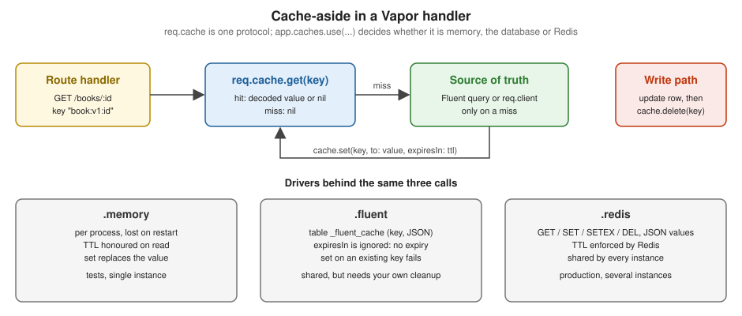

Redis & Caching
|
This content was generated with the assistance of AI and should be verified against the official documentation before being relied on in production. |
This page is written against Vapor 4.122.2 on Swift 6.4 (the package builds in the Swift 6 language mode with tools
version 6.3, as
the official template does; Vapor 4.122.2 itself needs tools version 6.0), with vapor/redis 4.14.0 (which wraps
RediStack 1.6.3),
Fluent 4.13.0 and fluent-sqlite-driver 4.9.0, checked on 2026-10-17. Every Swift listing on this page was compiled in
the Swift 6
language mode with zero warnings in a scratch package. The memory and Fluent cache drivers, the cache-aside handlers and
the
tests were actually run, and the curl and test output shown is captured from those runs. No Redis server was
available when this
page was written (no redis-server binary and no running Docker daemon on the machine), so the Redis-specific code,
including the
Redis cache driver, Pub/Sub, the lock, the rate limiter and Redis sessions, was compiled but not run against a live
server. The
only Redis behaviour observed is how the client fails when nothing is listening, shown in Common errors. Vapor 5 is
at
5.0.0-beta.4 and is not released yet; where its cache differs, that is noted. The page extends the Bookshelf service
of the
earlier pages: book lookups are cached as small DTOs, and the external catalog lookup of the
HTTP Client page gets a
cache in front of it. The Redis server itself (data types, persistence, eviction, clustering) is covered in the
Redis section; the same topic in Rust is in
Redis & Caching with axum. Swift itself is covered by the
Swift Reference, and Sendable by
Actors, Isolation and Sendable. Everything on the
Redis side
also works with Valkey, the open-source Redis fork, because the wire protocol is the same. Redis is also the usual store
for
Queues & Background Jobs and for the slot lock of
Scheduled Jobs.
What is cached, and who owns the truth
A cache is a copy that is allowed to be wrong for a while. Every design decision on this page follows from three questions: what is the key, how long may the copy be stale, and what makes it stale early (a write)? Vapor gives you two different things that people call "Redis caching", and it pays to keep them apart:
-
The
Cacheprotocol: a tiny, driver-neutral key-value API (get,setwith an optional expiry,delete) reached throughreq.cacheandapp.cache. Behind it sits the memory driver (built in), the Fluent driver (in thefluentpackage, see Fluent Overview and Database Drivers) or the Redis driver (in theredispackage). Your handler code does not change when the driver does. -
The Redis client:
app.redisandreq.redisgive you every Redis command (counters, locks, Pub/Sub, sorted sets, streams), not just a key-value store. Use it directly when theCacheprotocol is too small, as in the rate limiter and lock below.

The Cache protocol
Cache lives in Sources/Vapor/Cache/Cache.swift. In 4.122.2 it is a futures-based protocol with async overloads in
an
extension:
// Vapor 4.122.2, abridged
public protocol Cache {
func get<T>(_ key: String, as type: T.Type) -> EventLoopFuture<T?> where T: Decodable
func set<T>(_ key: String, to value: T?) -> EventLoopFuture<Void> where T: Encodable
func set<T>(_ key: String, to value: T?, expiresIn expirationTime: CacheExpirationTime?) -> EventLoopFuture<Void> where T: Encodable
func `for`(_ request: Request) -> Self
}
// Cache+Concurrency.swift: async throws overloads, the ones new code calls
// func get<T>(_ key: String, as type: T.Type) async throws -> T? where T: Decodable & Sendable
// func set<T>(_ key: String, to value: T?, expiresIn: CacheExpirationTime?) async throws where T: Encodable & Sendable
// func delete(_ key: String) async throwsSource: vapor/vapor 4.122.2: Cache.swift
The points that matter in practice:
-
Values are
Codable. A cache entry is whatever the driver’s coder turns your value into (JSON for the Redis and Fluent drivers); memory keeps the Swift value itself in a dictionary. Theasyncoverloads additionally requireSendable. -
getreturnsnilon a miss. Passingnilas the value ofsetremoves the key, anddelete(_:)is exactly that (set(key, to: String?.none)). -
CacheExpirationTimeis an enum with.seconds(_),.minutes(_),.hours(_)and.days(_)cases and asecondsproperty. There is no "forever" case; omitexpiresIn(or passnil) for no expiry. -
for(_ request:)returns a request-bound copy of the driver. That is whyreq.cacheexists next toapp.cache: the Redis and Fluent drivers use it to run on the request’s event loop and logger. Inside a handler usereq.cache. -
Cacheis notSendablein 4.122. Storing anany Cachein aSendablestruct is a compile error ("stored property 'cache' of 'Sendable'-conforming struct has non-Sendable type 'any Cache'"), which is why theCachedCatalogtype below is a plain struct created per request fromreq.cache. In Vapor 5 the protocol isCache: Sendableand has only theasyncrequirements.
Choosing the driver: app.caches.use
Application.init registers the memory driver (caches.initialize() calls use(.memory)), so req.cache works
without any
configuration. Choose another driver in configure, once, before the application starts serving requests. Reading
app.cache
when no driver is registered stops the process with a fatalError("No cache configured..."), but that cannot happen
with the
default in place.
import Fluent
import FluentSQLiteDriver
import Redis
import Vapor
/// Which cache driver backs `app.cache` and `req.cache`.
enum CacheDriver: String {
case memory, fluent, redis
}
func configure(_ app: Application) async throws {
app.databases.use(.sqlite(.memory), as: .sqlite)
app.migrations.add(CreateBookshelf())
app.migrations.add(CacheEntry.migration) // creates "_fluent_cache"; needed only for the fluent driver
let driver = Environment.get("CACHE_DRIVER").flatMap(CacheDriver.init(rawValue:)) ?? .memory
switch driver {
case .memory:
app.caches.use(.memory)
case .fluent:
app.caches.use(.fluent)
case .redis:
try configureRedis(app)
app.caches.use(.redis)
}
try await app.autoMigrate()
try routes(app)
}use takes either a Provider (.memory, .fluent, .fluent(_ db:), .redis, .redis(_ id:),
.redis(encoder:decoder:)) or a
closure (Application) -> Cache. Selecting the driver from an environment variable, as above, is the usual way to run
the
memory driver in tests and development and Redis in production.
The three drivers compared
Memory (.memory) |
Fluent (.fluent) |
Redis (.redis) |
|
|---|---|---|---|
Storage |
A dictionary in an actor inside the process; lost on restart; not shared between instances |
Table |
Redis keys holding JSON |
Setup |
None |
Add |
Add the |
|
Honoured: an expired entry is dropped on the next read |
Ignored: the default |
Honoured by Redis ( |
|
Replaces it (and drops the old expiry) |
Fails: the driver always inserts, so the unique index on |
Replaces it ( |
Type mismatch on |
Returns |
Throws a |
Throws a |
Best for |
Tests, development, a single instance, hot data that is cheap to rebuild |
A cache you cannot get from anywhere else and are willing to clean yourself |
Production with more than one instance |
The behaviours in the second and third rows are the ones that surprise people, and they are the reason this page does not just say "any driver works". They were checked against the sources and by the test suite below, run against the memory and Fluent drivers:
@testable import App
import Fluent
import FluentSQLiteDriver
import Testing
import Vapor
import VaporTesting
@Suite("Cache drivers")
struct CacheTests {
private func withApp(_ driver: CacheDriver, _ body: (Application) async throws -> Void) async throws {
let app = try await Application.make(.testing)
do {
app.databases.use(.sqlite(.memory), as: .sqlite)
app.migrations.add(CacheEntry.migration)
switch driver {
case .memory: app.caches.use(.memory)
case .fluent: app.caches.use(.fluent)
case .redis: Issue.record("not run")
}
try await app.autoMigrate()
try await body(app)
} catch {
try await app.asyncShutdown()
throw error
}
try await app.asyncShutdown()
}
@Test("memory cache expires entries and replaces existing ones")
func memoryExpiryAndReplace() async throws {
try await withApp(.memory) { app in
try await app.cache.set("k", to: "one", expiresIn: .seconds(1))
try await app.cache.set("k", to: "two") // replaces, and drops the expiry
#expect(try await app.cache.get("k", as: String.self) == "two")
try await app.cache.set("e", to: "soon", expiresIn: .seconds(1))
try await Task.sleep(for: .seconds(1.2))
#expect(try await app.cache.get("e", as: String.self) == nil)
try await app.cache.set("k", to: String?.none)
#expect(try await app.cache.get("k", as: String.self) == nil)
}
}
@Test("fluent cache ignores the expiry and cannot overwrite a key")
func fluentQuirks() async throws {
try await withApp(.fluent) { app in
try await app.cache.set("e", to: "soon", expiresIn: .seconds(1))
try await Task.sleep(for: .seconds(1.2))
#expect(try await app.cache.get("e", as: String.self) == "soon") // never expires
await #expect(throws: (any Error).self) {
try await app.cache.set("e", to: "again") // unique violation on "key"
}
try await app.cache.delete("e")
try await app.cache.set("e", to: "again")
#expect(try await app.cache.get("e", as: String.self) == "again")
}
}
@Test("a type mismatch reads as a miss in memory and throws in fluent")
func typeMismatch() async throws {
try await withApp(.memory) { app in
try await app.cache.set("n", to: 42)
#expect(try await app.cache.get("n", as: String.self) == nil)
}
try await withApp(.fluent) { app in
try await app.cache.set("n", to: 42)
await #expect(throws: (any Error).self) { _ = try await app.cache.get("n", as: String.self) }
}
}
}The output of swift test:
✔ Test "a type mismatch reads as a miss in memory and throws in fluent" passed after 0.020 seconds.
✔ Test "memory cache expires entries and replaces existing ones" passed after 1.214 seconds.
✔ Test "fluent cache ignores the expiry and cannot overwrite a key" passed after 1.238 seconds.
✔ Suite "Cache drivers" passed after 1.238 seconds.
✔ Test run with 3 tests in 1 suite passed after 1.238 seconds.Two consequences. First, the Fluent driver is a poor fit for caching derived data, since stale rows pile up until
something deletes
them; a nightly job that deletes old _fluent_cache rows is not possible by age either, because the table has no
timestamp, so
prefer the memory or Redis driver for expiring data. Second, with the Fluent driver, two requests that miss on the same
key at
the same time both try to insert it and the loser gets a unique-constraint error (a 500), so wrap the write in try?
if a lost
race is acceptable.
Cache-aside for a database row
The pattern used throughout this page is cache-aside (lazy loading): read the cache; on a miss read the source of truth and write the result back with a TTL; on a write to the source of truth, delete the cached copy and let the next read refill it. The cache never holds anything the database does not, so losing it costs speed, not data.
The next listing shows the whole handler set. GET /books/:id caches a small DTO (never a Fluent model: models are
reference
types with property wrappers, are @unchecked Sendable and encode with their database shape, whereas a DTO is a value
with a stable
JSON shape). PUT /books/:id/price writes and then deletes the key. The key has a version segment (book:v1:) so a
change to
`BookDTO’s shape can be rolled out by bumping it, instead of decoding old JSON into a new type.
import Fluent
import Vapor
struct BookDTO: Content, Equatable {
let id: UUID
let title: String
let priceCents: Int
}
struct PriceUpdate: Content { let priceCents: Int }
func routes(_ app: Application) throws {
let counter = UpstreamCounter()
// GET /catalog/:isbn -> cache-aside around a (stubbed) external API
app.get("catalog", ":isbn") { req async throws -> Response in
let isbn = try req.parameters.require("isbn")
let catalog = CachedCatalog(cache: req.cache, ttl: .minutes(10)) { isbn in
let n = await counter.next()
return BookMetadata(isbn: isbn, title: "Upstream title #\(n)", pages: 300)
}
let (value, hit) = try await catalog.metadata(isbn: isbn)
let response = Response(status: .ok)
try response.content.encode(value)
response.headers.replaceOrAdd(name: "X-Cache", value: hit ? "HIT" : "MISS")
return response
}
// DELETE /catalog/:isbn -> explicit invalidation
app.delete("catalog", ":isbn") { req async throws -> HTTPStatus in
let isbn = try req.parameters.require("isbn")
try await req.cache.delete(CachedCatalog.key(for: isbn))
return .noContent
}
// GET /books/:id -> database row cached as a DTO; PUT invalidates
app.get("books", ":id") { req async throws -> Response in
let id = try req.parameters.require("id", as: UUID.self)
let key = "book:v1:\(id.uuidString.lowercased())"
let response: Response
if let cached = try await req.cache.get(key, as: BookDTO.self) {
response = try await cached.encodeResponse(for: req)
response.headers.replaceOrAdd(name: "X-Cache", value: "HIT")
} else {
guard let book = try await Book.find(id, on: req.db) else { throw Abort(.notFound) }
let dto = BookDTO(id: id, title: book.title, priceCents: book.priceCents)
try await req.cache.set(key, to: dto, expiresIn: .minutes(5))
response = try await dto.encodeResponse(for: req)
response.headers.replaceOrAdd(name: "X-Cache", value: "MISS")
}
return response
}
app.put("books", ":id", "price") { req async throws -> HTTPStatus in
let id = try req.parameters.require("id", as: UUID.self)
let update = try req.content.decode(PriceUpdate.self)
guard let book = try await Book.find(id, on: req.db) else { throw Abort(.notFound) }
book.priceCents = update.priceCents
try await book.update(on: req.db)
try await req.cache.delete("book:v1:\(id.uuidString.lowercased())") // invalidate after the write commits
return .noContent
}
// Seeds one book and returns its id (demo only)
app.post("seed") { req async throws -> String in
let author = Author(name: "Ada")
try await author.save(on: req.db)
let book = Book(title: "Cache Patterns", isbn: "978-0-00-000000-1", publishedYear: 2026, priceCents: 2500,
status: .published, authorID: try author.requireID())
try await book.save(on: req.db)
return try book.requireID().uuidString
}
}Source: Vapor docs: Fluent, Vapor docs: Routing
Running it with the memory driver (CACHE_DRIVER=memory .build/debug/App serve) and with CACHE_DRIVER=fluent; the
output is
the same apart from the order of the JSON keys, which JSONEncoder does not fix:
$ curl -si localhost:8091/catalog/978-1 | grep -E "X-Cache|title" # first call: miss, upstream is called
X-Cache: MISS
{"isbn":"978-1","title":"Upstream title #1","pages":300}
$ curl -si localhost:8091/catalog/978-1 | grep -E "X-Cache|title" # second call: served from the cache
X-Cache: HIT
{"title":"Upstream title #1","isbn":"978-1","pages":300}
$ curl -s -o /dev/null -w "DELETE %{http_code}\n" -X DELETE localhost:8091/catalog/978-1
DELETE 204
$ curl -si localhost:8091/catalog/978-1 | grep -E "X-Cache|title" # after invalidation: upstream called again (#2)
X-Cache: MISS
{"isbn":"978-1","title":"Upstream title #2","pages":300}
$ ID=$(curl -s -X POST localhost:8091/seed)
$ curl -si localhost:8091/books/$ID | grep -E "X-Cache|price" # MISS, then HIT
$ curl -s -o /dev/null -w "PUT %{http_code}\n" -X PUT -H 'content-type: application/json' -d '{"priceCents":3000}' localhost:8091/books/$ID/price
PUT 204
$ curl -si localhost:8091/books/$ID | grep -E "X-Cache|price" # MISS again, price now 3000
X-Cache: MISS
{"priceCents":3000,"id":"...","title":"Cache Patterns"}Things to notice in the handlers:
-
Order in the write path. The delete happens after the update succeeds. Deleting first would let a concurrent reader refill the cache with the old row between the delete and the commit. Even in the right order a reader that loaded the old row just before the update can write it back just after the delete; the TTL is what bounds that staleness, so keep it short enough that you can live with it. For a write inside a database transaction, delete the key after the transaction has committed.
-
Negative results. A
404is not cached here, so every request for a missing id reaches the database. If that is a risk, cache a "not found" marker with a short TTL. -
Per-user data. Put whatever varies the response into the key (
user:\(id):cart). A key that omits the user turns the cache into a data leak. -
Keys are strings you invent. Use a prefix per concern and a version, and keep them out of user control (see Common errors).
The external API behind a cache
The HTTP Client page builds a CatalogClient that calls an external catalog
service with timeouts and maps
upstream failures to 502/504. Calling it on every request is slow and counts against the upstream’s rate limit, so
the lookup
gets a cache-aside wrapper. CachedCatalog takes the lookup as a closure, so production code passes
catalog.metadata(isbn:) from that page and tests pass a stub that counts calls.
import Vapor
struct BookMetadata: Content, Equatable {
let isbn: String
let title: String
let pages: Int
}
/// Cache-aside around any async source of metadata. The source is a closure so that production code passes
/// `CatalogClient.metadata` (see the HTTP client page) and tests pass a counting stub.
struct CachedCatalog {
let cache: any Cache
let ttl: CacheExpirationTime
let fetch: @Sendable (String) async throws -> BookMetadata
static func key(for isbn: String) -> String { "catalog:v1:isbn:\(isbn)" }
func metadata(isbn: String) async throws -> (value: BookMetadata, hit: Bool) {
let key = Self.key(for: isbn)
if let cached = try await cache.get(key, as: BookMetadata.self) {
return (cached, true)
}
let fresh = try await fetch(isbn)
try await cache.set(key, to: fresh, expiresIn: ttl)
return (fresh, false)
}
func invalidate(isbn: String) async throws {
try await cache.delete(Self.key(for: isbn))
}
}
/// Counts upstream calls so the example can show hits and misses.
actor UpstreamCounter {
private(set) var calls = 0
func next() -> Int { calls += 1; return calls }
}Source: Vapor docs: Client
The wiring is the GET /catalog/:isbn route in the previous listing, which builds CachedCatalog from req.cache and
a closure
(a stub here, CatalogClient in the real service). Worth knowing:
-
An upstream failure throws before
set, so errors are not cached and a recovering upstream is picked up on the next request. A cached404from the upstream, if you want one, must be stored explicitly. -
The TTL is a business decision. Book metadata changes rarely, so ten minutes (or hours) is fine; a stock level is not cacheable at that granularity. Honour the upstream’s own
Cache-Control: max-ageif it sends one. -
The cache lets you serve something when the upstream is down only if you keep a second, longer-lived copy ("stale if error"); with a single TTL an expired entry is simply gone.
-
The route handler is the only place that knows the key format;
invalidate(isbn:)and theDELETEroute build the key with the same function, so the two cannot drift apart.
The vapor/redis package
vapor/redis (a library product named Redis) integrates RediStack, Swift’s NIO-based Redis client, with Vapor’s
Application
and Request. Add it to the package:
// Package.swift (dependencies)
.package(url: "https://github.com/vapor/redis.git", from: "4.14.0"),
// target dependencies
.product(name: "Redis", package: "redis"),The Redis module re-exports RediStack (@_exported import RediStack), so import Redis is enough to name
RESPValue, RedisKey and
RedisChannelName. vapor/redis 4.14.0 requires Vapor 4.100 or newer and RediStack 1.4.1 or newer
(1.6.3 was resolved here).
Configuration
import Redis
import Vapor
/// Reads `REDIS_URL` (for example `redis://:placeholder-password@localhost:6379/0`) and configures the default pool.
func configureRedis(_ app: Application) throws {
let url = Environment.get("REDIS_URL") ?? "redis://localhost:6379"
app.redis.configuration = try RedisConfiguration(
url: url,
pool: .init(
maximumConnectionCount: .maximumActiveConnections(8),
minimumConnectionCount: 1,
connectionRetryTimeout: .seconds(5)
)
)
}
/// A second, independent Redis (for example sessions on database 1) addressed by its own `RedisID`.
extension RedisID {
static let sessions: RedisID = "sessions"
}
func configureSessionsRedis(_ app: Application) throws {
app.redis(.sessions).configuration = try RedisConfiguration(
hostname: Environment.get("SESSIONS_REDIS_HOST") ?? "localhost",
port: 6379,
password: Environment.get("SESSIONS_REDIS_PASSWORD"),
database: 1
)
}
/// Commands on `req.redis`: the typed helpers and the escape hatch.
struct RedisCommandsDemo {
static func run(_ req: Request) async throws -> String {
let redis = req.redis
// Legacy bridge: RediStack's set, get, setex and increment return EventLoopFuture and have no async
// overload in vapor/redis 4.14.0, so they are awaited with .get(). ttl, expire and send are async.
try await redis.set("greeting", to: "hello").get()
let value = try await redis.get("greeting", as: String.self).get()
try await redis.setex("short-lived", to: "bye", expirationInSeconds: 30).get()
let ttl = try await redis.ttl("short-lived")
let hits = try await redis.increment("hits:index").get()
_ = try await redis.expire("hits:index", after: .seconds(60))
let pong = try await redis.send(command: "PING", with: [RESPValue(from: "hello")])
return "\(value ?? "nil") \(ttl) \(hits) \(pong.string ?? "?")"
}
}The configuration type, with every property:
| Property or initializer | Meaning |
|---|---|
|
Parses |
|
The same for a single host; the port defaults to 6379. A negative database throws |
|
|
|
Applied when each connection is created ( |
|
TLS settings and the name used for certificate verification. |
|
|
|
Connections kept alive; the default 0 means connections are created on demand, which adds latency to the first requests. |
|
Reconnect back-off (factor 2 and 100 ms by default) and how long a caller waits for a connection before failing ( |
|
A |
How the pools are built matters for sizing: vapor/redis creates one connection pool per event loop, per configured
RedisID, in
its didBoot lifecycle hook. A server on an 8-core machine has 8 event loops, so .maximumActiveConnections(8) means
up to 64
connections to Redis from one process. Size the Redis maxclients limit for instances x event loops x maximum, and
prefer
a small maximum. Two consequences of building pools at boot:
-
app.redis.configurationmust be assigned inconfigure, before boot. Replacing a configuration afterwards is not supported (fatalError("Modifying connection pools after application has booted is not supported")), and assigningnilis afatalErrortoo. -
Using a
RedisIDthat was never configured stops the process withfatalError("No redis found for id ...").
Several Redis instances. RedisID is a Sendable string-backed identifier; define constants in an extension
(extension RedisID { static let sessions: RedisID = "sessions" }) and address them with app.redis(.sessions) or
req.redis(.sessions). app.redis is shorthand for app.redis(.default). The Cache provider takes the same ID:
app.caches.use { $0.caches.redis(.sessions) }.
Commands: typed helpers and send(command:with:)
app.redis and req.redis conform to RediStack’s RedisClient, which has typed methods for the common commands
(get, set,
setex, delete, exists, expire, ttl, increment, publish, hashes, lists, sets, sorted sets, …). The typed
methods return
EventLoopFuture`s; the package adds `async forms for the most common ones (exists, expire, ttl, pttl, send,
subscribe
and the JSON helpers) in RedisClient+Concurrency.swift, and for everything else you call .get() on the future.
Prefer
req.redis in handlers (the command is logged with the request’s logger and runs on the request’s event loop) and
app.redis in
boot code and background tasks.
RedisKey is an ExpressibleByStringLiteral struct, so "greeting" works for a key, and so do string interpolations
built into a
RedisKey(...) initializer. For commands RediStack does not wrap, send(command:with:) takes the command name and an
array of
RESPValue.
let pong = try await req.redis.send(command: "PING", with: [RESPValue(from: "hello")])The Vapor Redis documentation writes this argument as the literal ["hello"]; with Redis 4.14.0 and RediStack 1.6.3
RESPValue is not ExpressibleByStringLiteral, so that form is a compile error ("cannot convert value of type
'[String]' to
expected argument type '[RESPValue]'"). Convert each argument with RESPValue(from:).
The full command set used on this page, in one handler body (this is RedisCommandsDemo from the listing above): set,
get
with a decoded type, setex for a value with a lifetime, ttl, increment and expire for a counter, and send for
a command with no
typed wrapper. ttl returns RedisKey.Lifetime (.keyDoesNotExist, .unlimited or .limited(Duration)), not a
number, so a
missing key and a key without expiry are distinguishable.
JSON values and the Redis cache driver
For one-off values, the package adds setex(_:toJSON:expirationInSeconds:), set(_:toJSON:) and get(_:asJSON:)
on any
RedisClient, using JSONEncoder/JSONDecoder. These are what to use when the key belongs to Redis only (a
search-result page,
a computed report) and does not need to be portable across cache drivers:
import Foundation
import Redis
@preconcurrency import RediStack
import Vapor
// MARK: JSON values with the typed helpers
struct SearchResultPage: Codable, Sendable {
let query: String
let isbns: [String]
}
func cacheSearch(_ req: Request, page: SearchResultPage) async throws {
// The JSON helpers live on RedisClient, so they are also available on req.redis.
try await req.redis.setex(RedisKey("search:v1:\(page.query)"), toJSON: page, expirationInSeconds: 120)
}
func cachedSearch(_ req: Request, query: String) async throws -> SearchResultPage? {
try await req.redis.get(RedisKey("search:v1:\(query)"), asJSON: SearchResultPage.self)
}The Redis Cache driver (.redis) is the same idea behind the Cache protocol: set encodes the value with the
configured
coder and runs SETEX (with expiresIn) or SET (without), get runs GET and decodes, set(..., to: nil) runs
DEL. The coders are
any type conforming to RedisCacheEncoder/RedisCacheDecoder; JSONEncoder/JSONDecoder and PropertyListEncoder/
PropertyListDecoder already do. Pass your own configured pair when dates must be ISO 8601 or keys snake_case:
// RedisExtras.swift, continued
// MARK: Driver variants and sessions
func configureAlternativeDrivers(_ app: Application) throws {
// Explicit coders (any RedisCacheEncoder/RedisCacheDecoder) instead of the defaults:
let encoder = JSONEncoder()
encoder.dateEncodingStrategy = .iso8601
let decoder = JSONDecoder()
decoder.dateDecodingStrategy = .iso8601
app.caches.use(.redis(encoder: encoder, decoder: decoder))
// A named second connection used for a second cache.
try configureSessionsRedis(app)
app.caches.use { app in app.caches.redis(.sessions) }
// Sessions stored in Redis (cookie holds only the session id):
app.sessions.use(.redis)
app.middleware.use(app.sessions.middleware)
}The Redis driver writes the key you give it with no prefix, so two services sharing one Redis, or two environments
sharing one
database index, will overwrite each other unless the keys carry a prefix (bookshelf:prod:catalog:v1:...) or the
services use
different database numbers.
Cache stampede, jitter and a single-flight lock
When a popular key expires, every request that arrives before the first one has refilled it misses and hits the source of truth at once: a cache stampede. Two cheap defences exist, and they combine.
Jitter. Entries written together expire together. Randomising the TTL by a fraction spreads the misses out in time, and costs one line.
A single-flight lock. On a miss, try to take a short-lived lock with SET key value NX EX seconds; the one caller
that gets it
rebuilds the value, the others either wait briefly and re-read the cache or serve slightly stale data. NX makes the
set
conditional on the key not existing, and EX makes the lock expire by itself if the rebuilding process dies:
// RedisExtras.swift, continued
// MARK: Single-flight lock against a cache stampede
enum StampedeGuard {
/// Returns true for exactly one caller per key and lock lifetime (SET key value NX EX seconds).
static func tryAcquire(_ req: Request, key: String, seconds: Int) async throws -> Bool {
let result = try await req.redis.set(
RedisKey("lock:\(key)"),
to: req.id,
onCondition: .keyDoesNotExist,
expiration: .seconds(seconds)
).get()
return result == .ok
}
static func release(_ req: Request, key: String) async throws {
_ = try await req.redis.delete(RedisKey("lock:\(key)")).get()
}
}
/// A TTL with up to 20 percent random jitter, so entries written together do not all expire together.
func jitteredTTL(seconds: Int) -> CacheExpirationTime {
.seconds(seconds + Int.random(in: 0...(seconds / 5)))
}Source: Redis: SET, Redis: distributed locks
set(_:to:onCondition:expiration:) returns RedisSetCommandResult (.ok or .conditionNotMet). The lock is
advisory and
best-effort: it is a hint to reduce load, not a guarantee of mutual exclusion (the lock can expire while the holder is
still
working, and release deletes whatever is there, not only your own token). Do not use it to protect a
correctness-critical
section; for that use a database constraint or a proper lock protocol.
The @preconcurrency import RediStack at the top of that file silences one warning, "type 'RedisSetCommandResult' does
not conform to the
'Sendable' protocol": RediStack’s RedisSetCommandResult and RedisChannelName are not
Sendable (the RedisKey type was not checked). The vapor/redis package itself imports RediStack that way. That also
explains why RedisChannelName.bookChanged below
is a computed property (static var ... { "..." }): a stored static let of a non-Sendable type is rejected in the
Swift 6
language mode ("static property is not concurrency-safe because non-'Sendable' type may have shared mutable state").
Rate limiting with INCR and EXPIRE
Counters are a use of Redis that the Cache protocol cannot express, since INCR is atomic on the server. A
fixed-window limiter
is a middleware: increment a per-client-per-window key, set its expiry when the count is 1, and answer 429 above the
limit.
// RedisExtras.swift, continued
// MARK: Fixed-window rate limiter on INCR + EXPIRE
struct RateLimitMiddleware: AsyncMiddleware {
let limit: Int
let windowSeconds: Int
func respond(to request: Request, chainingTo next: any AsyncResponder) async throws -> Response {
let client = request.remoteAddress?.ipAddress ?? "unknown"
let window = Int(Date().timeIntervalSince1970) / windowSeconds
let key = RedisKey("rl:\(client):\(window)")
let count = try await request.redis.increment(key).get()
if count == 1 {
_ = try await request.redis.expire(key, after: .seconds(Int64(windowSeconds))).get()
}
guard count <= limit else {
throw Abort(.tooManyRequests, headers: ["Retry-After": "\(windowSeconds)"])
}
return try await next.respond(to: request)
}
}Source: Vapor docs: Middleware, Redis: INCR
A middleware like this sits in the request lifecycle before the router’s handler, so register it on the group that
should be limited
(app.grouped(RateLimitMiddleware(limit: 60, windowSeconds: 60))) rather than globally. Caveats: a fixed window allows
up to twice the
limit across a window boundary; if the process dies between INCR and EXPIRE the key never expires (use a Lua script
or
SET key 0 EX n NX first if that matters); behind a reverse proxy remoteAddress is the proxy, so configure the
forwarded-for
handling first; and a Redis outage turns into a 500 here, so decide whether to fail open (catch and call next) or
closed.
The Middleware page covers the chain in general.
Pub/Sub for cross-instance invalidation
With one process, deleting a cache entry is enough. With several instances each holding an in-process cache (the memory
driver, or
a dictionary in a service), a write handled by one instance must evict the entry in all of them. Redis Pub/Sub is a
fire-and-forget
broadcast: PUBLISH sends a message to every currently subscribed connection, and a subscriber that is offline misses
it. That is
acceptable for cache invalidation (the TTL is the safety net) and wrong for anything that must not be lost (use Redis
Streams or a queue).
// RedisExtras.swift, continued
// MARK: Pub/Sub
extension RedisChannelName {
static var bookChanged: RedisChannelName { "bookshelf:book-changed" }
}
struct BookChanged: Codable, Sendable {
let bookID: UUID
let instance: String
}
/// Subscribes at start-up; every instance receives every message, including the one that published it.
struct BookChangeSubscriber: LifecycleHandler {
let instance: String
func didBoot(_ application: Application) throws {
let logger = application.logger
let me = instance
Task {
do {
try await application.redis.subscribe(
to: [.bookChanged],
messageReceiver: { channel, message in
guard let text = message.string,
let event = try? JSONDecoder().decode(BookChanged.self, from: Data(text.utf8)) else {
logger.warning("Ignoring malformed message on \(channel)")
return
}
logger.info("Book \(event.bookID) changed on \(event.instance); I am \(me)")
// Here: evict the in-process cache entry for event.bookID.
},
onSubscribe: { key, count in logger.info("Subscribed to \(key) (\(count) active)") },
onUnsubscribe: { key, count in logger.info("Unsubscribed from \(key) (\(count) left)") }
)
} catch {
logger.error("Redis subscription failed: \(error)")
}
}
}
}
func publishBookChanged(_ req: Request, bookID: UUID, instance: String) async throws {
let payload = String(decoding: try JSONEncoder().encode(BookChanged(bookID: bookID, instance: instance)), as: UTF8.self)
let receivers = try await req.redis.publish(payload, to: .bookChanged).get()
req.logger.debug("Delivered to \(receivers) subscriber(s)")
}The same mechanism fans out messages to connected clients of several instances; see WebSockets for pushing them to sockets. How the subscription behaves:
-
subscribe(to:messageReceiver:onSubscribe:onUnsubscribe:)has three phases:onSubscriberuns once when the subscription starts,messageReceiverruns for each message with the channel name and aRESPValue, andonUnsubscriberuns once when it ends, either because you calledunsubscribe(from:)or because the connection was lost.psubscribeis the same for glob patterns. -
A subscribed Redis connection can do nothing else, so a long-lived subscriber is registered once at boot, not per request.
-
The callbacks are plain (non-
Sendable) closures called on an event loop; keep them short, capture onlySendablevalues (aLoggerand aStringhere), and hand real work to aTask. -
A subscriber receives its own publications too, so a handler that evicts on message must tolerate evicting something it already evicted.
-
Whether a subscription survives a lost connection was not verified here;
onUnsubscribeis the hook for noticing that it ended and resubscribing. -
The subscriber is added from a
LifecycleHandler.didBoot, afterconfigureRedis, so thatvapor/redishas already created its pools (its owndidBoothandler is registered the first timeapp.redisis touched, inconfigure).
Sessions in Redis
vapor/redis also provides a session driver, so cookie-based sessions can be shared by all instances. The cookie
carries only a
session ID; the data lives in Redis under a key derived from it, and a RedisSessionsDelegate lets you change the key
format or how
the data is stored. Registration is the last lines of the configureAlternativeDrivers function in the listing above:
app.sessions.use(.redis) followed by app.middleware.use(app.sessions.middleware). Sessions are covered by the
Sessions and Cookies page (including the custom driver with a sliding time to live)
and by
Session Authentication and Web Login; the point here is
only that the driver uses the same pools and RedisID as the cache.
Source: Vapor docs: Redis sessions
Testing code that uses the cache
Because the driver is chosen in configure, tests use the memory driver (or call app.caches.use(.memory) in the
test’s own
setup) and need no Redis at all. The suite above is the pattern; a handler test with VaporTesting asserts the observable
behaviour,
the X-Cache header here:
@testable import App
import Testing
import Vapor
import VaporTesting
@Suite("Cached handlers")
struct HandlerTests {
@Test("the catalog route misses once, then hits, then misses after invalidation")
func catalogCacheAside() async throws {
let app = try await Application.make(.testing)
do {
try await configure(app) // CACHE_DRIVER is unset, so this is the memory driver
try await app.testing().test(.GET, "catalog/978-1") { res async in
#expect(res.headers.first(name: "X-Cache") == "MISS")
#expect((try? res.content.decode(BookMetadata.self))?.title == "Upstream title #1")
}.test(.GET, "catalog/978-1") { res async in
#expect(res.headers.first(name: "X-Cache") == "HIT")
#expect((try? res.content.decode(BookMetadata.self))?.title == "Upstream title #1")
}.test(.DELETE, "catalog/978-1") { res async in
#expect(res.status == .noContent)
}.test(.GET, "catalog/978-1") { res async in
#expect(res.headers.first(name: "X-Cache") == "MISS")
#expect((try? res.content.decode(BookMetadata.self))?.title == "Upstream title #2")
}
} catch {
try await app.asyncShutdown()
throw error
}
try await app.asyncShutdown()
}
}Source: Vapor docs: Testing
The memory cache is shared by every request of one Application, and each test makes its own Application, so tests do
not leak
entries into each other. To test the Redis driver itself, run a disposable Redis (a redis:7 container, or Valkey) and
point
REDIS_URL at it from the test environment; keep that suite out of the default swift test run if CI has no
container runtime.
Common errors
| Symptom | Cause and fix |
|---|---|
|
Nothing is listening at the configured address (observed with |
|
|
|
|
|
|
|
|
A |
Fluent driver: |
|
Fluent or Redis driver: the stored JSON no longer matches the type you read it as (a changed DTO, or a key shared by two types). Version the key. |
Cached data never expires with |
The Fluent driver ignores |
compile error "stored property 'cache' of 'Sendable'-conforming struct has non-Sendable type 'any Cache'" |
|
compile error "static property is not concurrency-safe because non-'Sendable' type 'RedisChannelName'" |
Make it a computed property. |
compile error "cannot convert value of type '[String]' to expected argument type '[RESPValue]'" |
Wrap each |
Cache hits show another user’s data |
The key omits something that varies the response (user, language, tenant). Add it to the key. |
Keys built from user input |
A request that can choose arbitrary keys can fill Redis. Build keys from validated components only, as |
Version notes
-
Vapor 3 to 4: caching in Vapor 4 is the
Cacheprotocol withapp.caches.use(...)andreq.cache, and Redis isapp.redisandreq.redisover RediStack; the Vapor 3 service-container APIs are gone. -
Redis package: the
asynchelpers (exists,expire,ttl,send,subscribe, the JSON helpers) exist in 4.14.0; the typed commands such asget(_:as:),set,setex,incrementanddeletestill return futures, which the listings finish with.get(). When each helper was added was not checked. -
Vapor 5 (5.0.0-beta.4, not generally available): per the
5.0.0-beta.4sources,CacheisSendableand has only two requirements,get(_:as:) async throwsandset(_:to:expiresIn:) async throws, withdelete,getandsetwithout expiry as extensions; the futures andfor(_:)are gone, so areq.cacheis the same value asapp.cache.vapor/redishas a 5.0.0-alpha.2.2 tag and av5-devbranch whose API is not released, so treat the Redis driver of Vapor 5 as unconfirmed. Code written with theasynccalls on this page ports with few changes; code that returns futures does not. -
Swift 6:
Cache,RedisChannelNameandRedisSetCommandResultare notSendablein the 4.x line (see above), so Swift 6 mode needs the computedstatic var, a per-request wrapper and a@preconcurrency importof RediStack where values cross an isolation boundary; Vapor’s ownredispackage compiles withStrictConcurrency=complete, andRedisIDandRedisConfigurationareSendable.
Where the books are outdated
-
Condon et al. (Server-Side Swift with Vapor, Kodeco) chapter 27 covers caching with memory, database and Redis stores and a cached external API call, written for Vapor 3 and futures. The concept, cache-aside with a TTL, is unchanged; today it is
req.cache.get/set(_:to:expiresIn:)withasync, and the driver is chosen withapp.caches.use(...). Check any database-backed cache against the no-expiry and no-overwrite behaviour of the Fluent driver described above. -
Yeung and Patel (Packt) predate
app.redisand Vapor 4’sCache; their Redis and caching material uses the Vapor 2 and 3 APIs. Replace it with theRedisproduct,app.redis.configurationand the.rediscache and session drivers. -
Where the Kodeco book scales out with Redis as a shared session and cache store, the idea holds and the APIs are
app.sessions.use(.redis)andapp.caches.use(.redis).